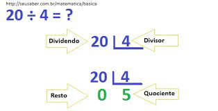
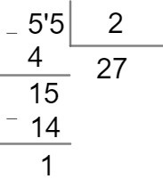

pagina matemática
divisão
A divisão é a operação matemática utilizada para separar os elementos de um conjunto em conjuntos menores, ou seja, para repartir uma quantidade em partes iguais.
O número que está sendo dividido em partes iguais é chamado dividendo; o número que indica em quantas vezes vamos dividir é chamado divisor; o resultado é o quociente; o que sobra é o resto.

Elementos da divisão
Quando vamos dividir um número P por um número d, devemos buscar um número q que multiplicado por d seja igual a P. Cada um desses elementos recebem um nome: P é chamado de dividendo, d é o divisor e q o quociente.
Nem sempre é possível encontrar esse número q, em alguns casos, a multiplicação de d por q apenas fica muito próxima de P. Nessas situações, a diferença de P pelo resultado da multiplicação de d por q é chamado de resto e será denotado por r.
Exemplos
a) 28: 2 = 14, pois 2 ·14 = 28 → Divisão exata
b) 29: 2 ≠ 14, pois 2 ·14 = 28 → Divisão não exata, apresenta resto = 1
Quando o resto não aparece, ou seja, quando r = 0, dizemos que o número P é divisível por d. Caso contrário, P não é divisível por d.
Podemos afirmar que:
P = d ·q + r
Divisão com vírgula
Na divisão, há duas situações em que a vírgula pode aparecer: a primeira é quando o quociente não é um número inteiro, e a segunda é quando o dividendo e o divisor não são inteiros. Vejamos como resolver cada um desses casos por meio de exemplos.
Divisão em que o quociente não é inteiro
Esse caso ocorre quando os números não são divisíveis, ou seja, o resto da divisão é um número diferente de zero. Para realizar a divisão, devemos seguir o mesmo passo a passo citado anteriormente.
Entretanto, quando o resto for um número que não pode mais ser dividido, devemos acrescentar uma vírgula no quociente e um zero na casa das unidades do resto.

exercícos
- 156:6=
- 96:8=
- 128:4=
- 1000:5=
- 320:2=
- 100:4=